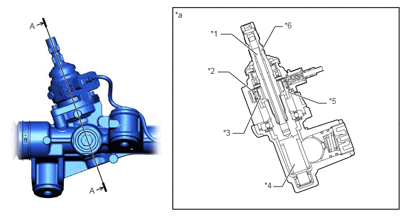
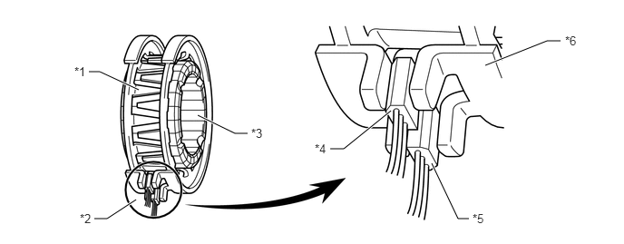
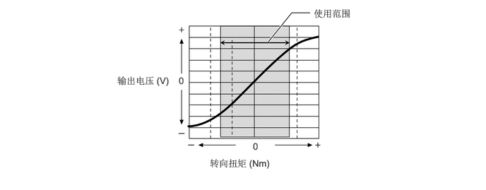

构造
采用霍尔集成电路型动力转向扭矩传感器。
动力转向扭矩传感器内置于齿轮齿条式动力转向机总成。多极磁铁安装在输入轴上，磁轭安装在小齿轮上。输入轴和小齿轮通过扭杆连接。磁会聚环总成位于磁轭外侧。

| *1 | 扭杆 | *2 | 磁会聚环总成 |
| *3 | 多极磁铁 | *4 | 小齿轮 |
| *5 | 磁轭 | *6 | 输入轴 |
| *a | A - A 横截面 | - | - |
功能
磁会聚环总成包含 2 个相对的霍尔集成电路。根据穿过霍尔集成电路的磁通量的方向，系统可以检测转向方向。此外，系统还根据多极磁铁和磁轭的相对位移产生的磁通密度变化量来检测转向扭矩。动力转向 ECU 监测 2 个霍尔集成电路输出的动力转向扭矩传感器信号以检测故障。

| *1 | 磁轭 | *2 | 动力转向扭矩传感器 |
| *3 | 多极磁铁 | *4 | 霍尔集成电路 2 |
| *5 | 霍尔集成电路 1 | *6 | 磁会聚环总成 |
